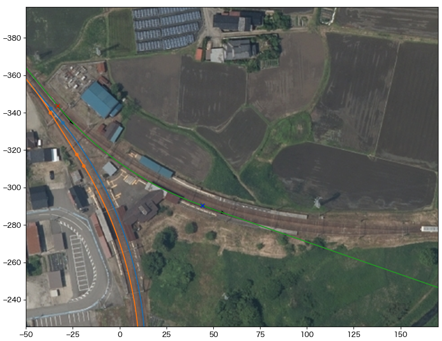
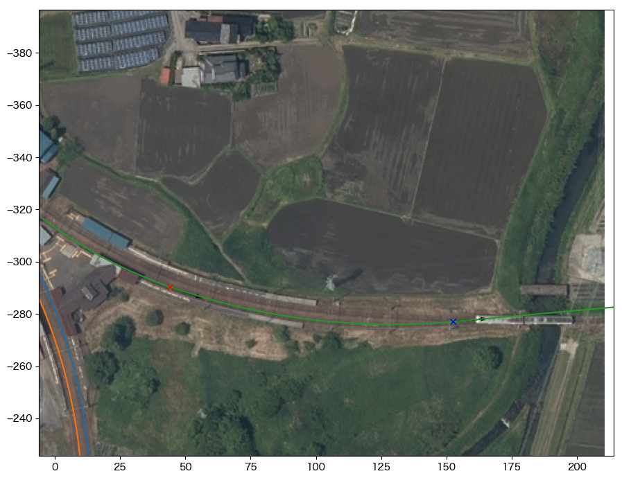
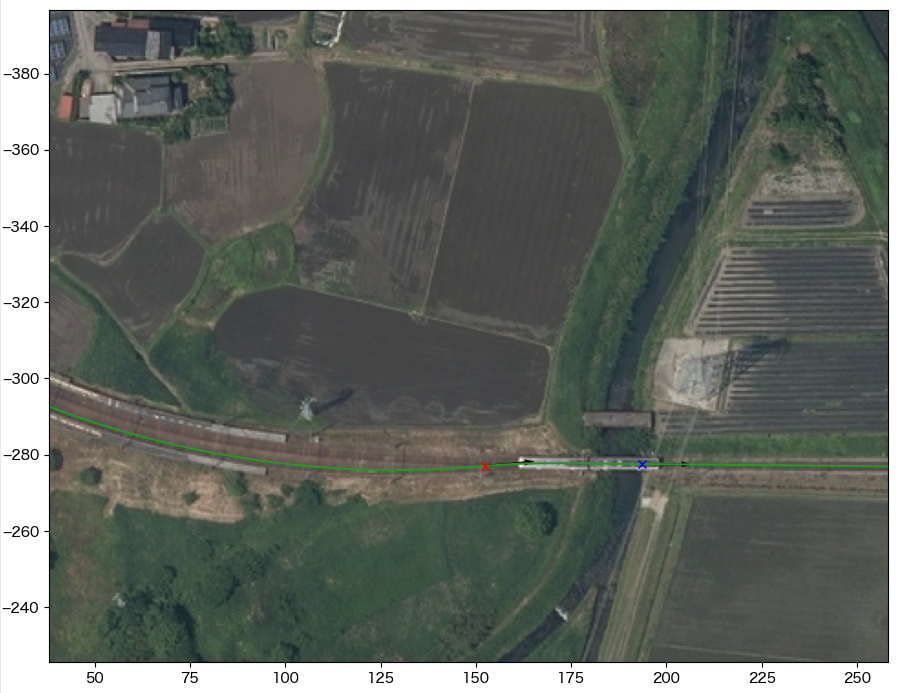

4. honsen_down の構築¶
4.1. 始点を決める¶
honsen_down軌道の始点座標を求め、main.cfgに[honsen_down]セクションを追加する。
カーソルAのtrackをtateyama_upにセットする
カーソルAを立山寄り分岐器の始端にセットし、その地点の距離程を読む
ここでは438m
下記の内容でmain.cfgに[tateyama_down]セクションを追加する
始点はtateyama_up軌道の距離程438m地点での値と同一、向きはtateyama_upと180°反対方向に設定される
- main.cfg¶
... [honsen_down] file = honsen_down.txt absolute_coordinate = False parent_track = tateyama_up origin_kilopost = 438 x = 0 y = 0 z = 0 angle = -180 endpoint = 1500
main.cfgと同じディレクトリに以下の内容でhonsen_down.txtを作成する
- honsen_down.txt¶
BveTs Map 2.02:utf-8 0; Curve.SetGauge(1.067); Curve.SetFunction(0);
4.2. 富山寄り分岐器¶
tateyama_upとの分岐器、honsen_upとの分岐器共に直進方向なので、特に処理は行わない。
4.3. プラットホーム部¶
プラットホーム部分の曲線軌道は複心曲線（異なる半径を持つ複数の円軌道からなる曲線）と想像されるが、詳細なデータを空中写真のみから得ることは難しいため、ここでは次のように処理する(誤魔化す)。 正確な曲線を得るためには、現地での曲線標の調査が必要だろう。
カーソルAのtrackをhonsen_downにセットする
カーソルAの位置、方向を曲線始点にセットする
ここでは距離程84.0m
カーソルBのtrackを @absoluteにセットする
カーソルBの位置、方向をプラットホーム中央あたりの軌道中心にセットする
CurveTrack Solverを以下の設定にしてDo Itする
α: A, β: B
mapsyntax にチェック
Mode: 1. α(fix)->β(free), R(free)
ターミナルへの出力をhonsen_down.txtにコピーして、データをリロードする
- honsen_down.txt¶
... $pt_a = 84.000000; $pt_a; $cant = 0; Curve.SetFunction(1); Curve.Interpolate(0.000000,0); $pt_a +0.000000; Curve.Interpolate(-176.237575, $cant); $pt_a +94.979259; Curve.Interpolate(-176.237575, $cant); $pt_a +94.979259; Curve.Interpolate(0.000000,0);
- 
(参考) 各カーソルの設定値¶ カーソル
x
y
dir
track
kilopost
A
-33.1
-343.7
-365.1
honsen_down
84.0
B
44.2
-290.4
-340.8
@absolute
/
カーソルAのtrackをhonsen_downにセットする
カーソルAの位置、方向を5. で求めた曲線の終点にセットする
ここでは距離程179.0m
カーソルBのtrackを @absoluteにセットする
カーソルBの位置、方向を曲線の終点にセットする
{kind=link}
立山寄りの分岐器曲線と紛らわしいので注意
CurveTrack Solverを以下の設定にしてDo Itする
α: A, β: B
mapsyntax にチェック
Mode: 1. α(fix)->β(free), R(free)
ターミナルへの出力をhonsen_down.txtにコピーして、データをリロードする
- 
(参考) 各カーソルの設定値¶ カーソル
x
y
dir
track
kilopost
A
44.2
-290.4
-340.8
honsen_down
179.0
B
152.5
-277.1
-365.1
@absolute
/
{kind=link}
4.4. 宇奈月寄り分岐器¶
この分岐器は10番振り分け分岐器(左右に非対称な曲線半径で分岐する)と想定されるが、正確な振り分け比を求めるのは大変(面倒)なので、ここでは空中写真に対して現物合わせで寸法を求めていく。
カーソルAのtrackをhonsen_downにセットする
カーソルAの位置、方向を分岐器曲線の始点にセットする
ここでは距離程289.0m
カーソルBのtrackを @absoluteにセットする
カーソルBの位置、方向を分岐器よりも立山寄りの直線上にセットする
CurveTrack Solverを以下の設定にしてDo Itする
α: A, β: B
mapsyntax にチェック
Mode: 1. α(fix)->β(free), R(free)
ターミナルへの出力をhonsen_down.txtにコピーしたのち、データをリロードして完成
- honsen_down.txt¶
... $pt_a = 289.0; $pt_a; $cant = 0; Curve.SetFunction(1); Curve.Interpolate(0.000000,0); $pt_a +0.000000; Curve.Interpolate(190.388260, $cant); $pt_a +18.987508; Curve.Interpolate(190.388260, $cant); $pt_a +18.987508; Curve.Interpolate(0.000000,0);
- 
(参考) 各カーソルの設定値¶ カーソル
x
y
dir
track
kilopost
A
152.5
-277.1
-5.1
honsen_down
289.0
B
193.5
-277.6
-0.6
@absolute
/
{kind=link}